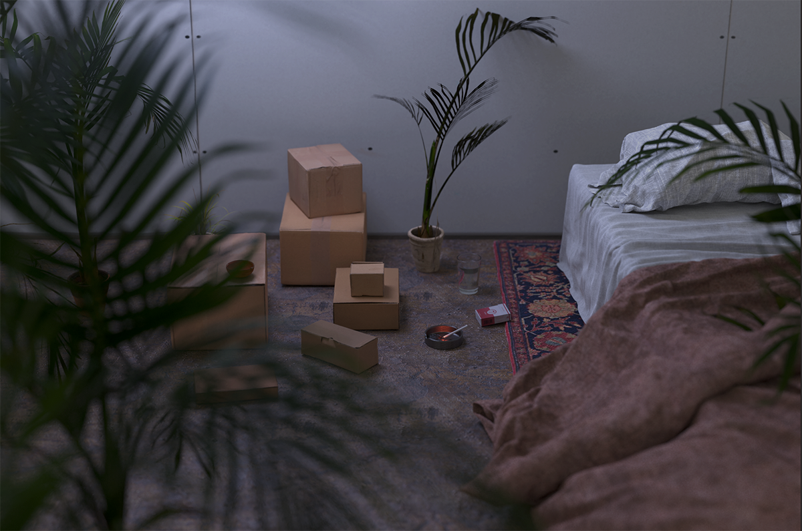
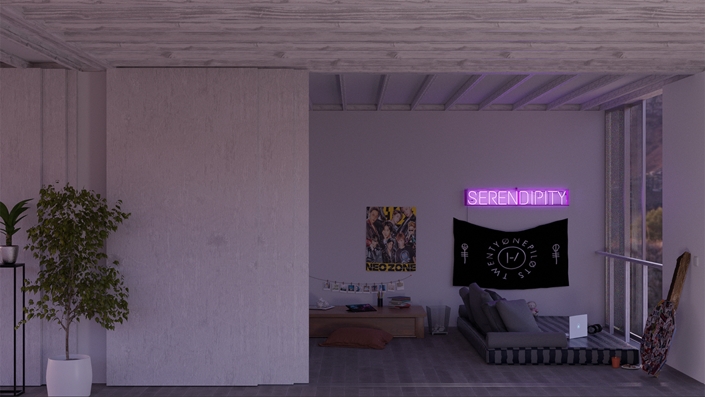
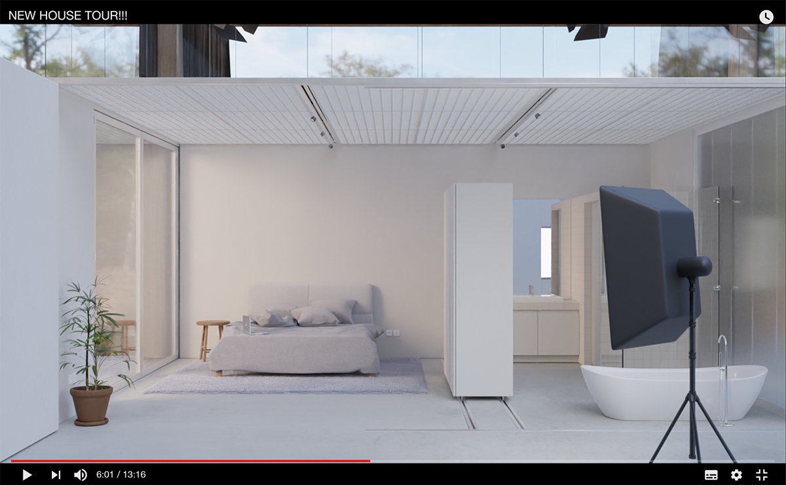

2022 Optical or tactile
| Author | UHO; Federico Coricelli and Max Turnheim |
| Publication | STOÀ #3 |
| Year | 2022 |
Optical or tactile. Architecture’s failure to store and distribute information
UHO–Max Turnheim and Federico Coricelli interviewed by Marianna Ascolese
In contemporary society, the image plays a decisive role in the perception of architecture and the approach to reality. In the pedagogical approach, the position of drawings, models, and renderings is a constant and still-open debate. It also displays a continuous interaction between craft and digital making. However, today’s architectural culture produces refined and spectacular images that bring together different and integrated worlds, digital and artisanal ones. The conversation with Max Turnheim and Federico Coricelli – founders of the UHO studio in 2013 – explores the multiple aspects of rendering in academic and professional contexts and investigates how the social and political frame could influence the perception and the production of the images in the architectural design. Producing images depicts both the expression of investigative values of the space and the identification of a commercial tool. Constructing images represents the basis of the pedagogical research in the design process, a technique that requires time and the ability to mature individual cultural experiences. Absorbing images needs a precise distance between the primary trends of the society and the theoretical awareness of each student. Renderings are – and will be – part of this investigation that touches both the digital and virtual worlds and belong to the design process in architectural education. Although the digital culture continues to develop, architectural students need to explore the physical and tactile body of architecture.

Daniel Swarovski. INT 12. 2019-20
Marianna Ascolese: Our society is predominantly retinal; it entrusts the eye with the ability to observe and understand reality. In this context Walter Benjamin’s contrast between touch and sight is explicit, the two senses that in different ways influence the perception of architectural space. Do you think it is possible to recognize a rendering as an autonomous tool, like drawings or models? In your opinion, what role does the render play in architectural design education?
Max Turnheim: It is important to understand in current times that the tactile and optical dichotomy enunciated by Benjamin1 to the period ranging from the early 18th century to the late 19th century in France, where readership penetrated the population. It goes from almost completely analphabet to almost totally literate. The consequence was that the storage and distribution of information started to use much more efficient means than architecture. Until then, architecture was a major means of storage and distribution of information – think of religious buildings. The question ported to the written medium or the book.
From that moment up until now, this type of transformation has happened multiple times. We have devices that are much more powerful and much more efficient in the storage and distribution of data or information. This means that architecture is incapable of competing on the optical level, so this aspect, the optical part, must be abandoned as a priority. The most autonomous representation tool addressing the tactile aspect – whether you bump into a wall or not – is the plan, there is no equivalent. It is the most important tool of representation of the partition of space, simply because it represents constrained navigation. The only thing that a render can provide is the atmospheric interpretation of the space to come. The plan is the object of navigation, it is an active document. The render itself is always used as an image of the absence of the user. If you look at our renders, there is almost never a character, and it seems as if they just left the scene, so it is a 3D of the absence of a user inside of space, a reference to its potential presence, the presentation of the absent.
Federico Coricelli: Ten years ago, when Pier Vittorio Aureli reintroduced the idea of the autonomy of the discipline with books as The Project of Autonomy2, it had a direct impact on student’s drawings. What followed was a period of mannerism of collages and Egyptian perspectives. In architectural schools, renderings where temporarily abandoned. Then students have the capacity to make obsolete new things very quickly by means of copying and iterating. The same collage repeated times and times again ends, exhausting the mean of representation. It took only few years for renderings to come back. I believe what became now an autonomous field for students is the translation of the Beaux-Art virtuoso into renderings.
MT: Architecture is work. This is very important because it is always defined as a pleasurable activity and artistic discipline. Not at all. It is work that transforms and commodifies space. In that sense, once it is a commodity there is a huge value attached, a desire, if not a need, for the object that can be expressed through the image. It is a perverse relationship to the object or the image, in one sense, and on the other side it is a pleasurable counterbalance to the difficult ascetic work of drawing plans for the students. In the pedagogical context, the deal is: you learn to partition space, and on the other side you can have fun with the atmospheric images. In the market of architecture, it is an essential communication tool for the buyer of the commodity, so to be able to sell the product of space as commodity you need to have these images, but it is a dirty object in terms of its political purity.
FC: If you take a photo of a physical model, it attempts as well to embed an artisanal labour value in the image. Somehow, the quest for the benjaminian aura of a non-replicable object – a non-rendering –, is fuelled by the will to escape the banality of commercial renderings. In the professional world, if you want to sell a project with an image you don’t need something sophisticated, you need to stimulate desire, and you can make it quickly. When the task is translated into architectural pedagogy, I think it meets the impossible quest of architecture to slow down the pace, to try to make models in plaster and spend maybe one month to learn the technique, and then to take a picture of it and to think about this as a form of resistance to the market...

Aida Aghayeva. INT 12. 2019-20
MA: Both of you operate in cultural contexts where the role of the representation of the architectural project has been relevant for the communicative process. Both the Italian school (from Aldo Rossi, Massimo Scolari to Superstudio and Archizoom) and the English tradition (from Archigram to Dogma) have experimented with drawing and collage as instruments of representation capable of communicating a precise idea of architecture. In your opinion, what could be contemporary references to look at useful for the students?
FC: For the Italian tradition, the radicals from Florence – where I graduated – represent a quite a new history, especially for the students. During the 1980s and the 1990s, up to the early 2000s, the radical neo-avantgardes of the 1960s were not so cool in architecture schools. Then you start to have the Biennale in 2014, the exhibition at PAC in Milan and at MAXXI in 2016, Palazzo Strozzi in 2017, and in Brussels last year3, just to mention a few, and their work was completely reconsidered. This is not surprising, because a lot of the radical ideas of these groups were the main causes of their dissolution in the mid-1970s, because the response of the market was actually enthusiastic to something conceived as a critique. Today, the time for historization of radical architecture has passed, and the theory becomes entirely distilled by the collages that we all know. It’s difficult to see this in a linear way, it is more like something that at some point jumps from forty or fifty years before and becomes the new normal.
MT: The UK still functions as a flavor of monarchy. It is a strange thing from a French perspective, the English have not gone through any revolution, it doesn’t exist in the popular mythology of the UK. What does this produce in terms of education in the UK? In the recent years, even public institutions have tuition fees that have gone through the roof. This lets the so called competitivity enter the context of research, and this must be a competitive context. What you notice in architecture schools in the UK, is that everything must be special, singular, the work must be innovative. The betterment of space is not a requirement. It becomes a completely secondary question. The main one is: has it been done before? «Is it disruptive?» as they would say in the tech industry.
FC: I’ll try to answer straightforward the question with two answers. The first one is what Mies van der Rohe suggested when they awarded him the Royal Gold Medal in 1959: «Learned most from old buildings»4. This was a statement on a flash card he was carrying that day, that I believe in its simplicity can’t be avoided by any shortcut or innovative study plan. In order to find references, specifically for architectural drawings, you need to have a geography of knowledge to navigate through. The second one is probably on the impossibility or the difficulty to express categorically some contemporary authors, because individuality is no more the leading value in any cultural domain. From fashion to music, it is all about collaborations, and contemporary architecture follows suit, so it becomes really a project-dependant and a context-dependant question. Plus, there is another obstacle. What students want to imitate is not a building, but a drawing. On the other hand, to understand architecture you need to interact physically with it.

Alejandro del Castillo. INT 12. 2019-20
MA: Looking at your work I was very impressed by the title you gave to the last unit at the AA in London, Low-def space in which you try to understand the impact that digital processes have in the definition of inhabited spaces. This idea of low-def space translates in contemporary times into spaces that are less and less defined for their capability of adapting to new uses; this clashes with the considerable amount of data used to build digital models in which the question of scale of representation and definition of detail is removed. So, how do renderings manage the figuration of the complexity of these inhabited spaces?
MT: When we picked this title with Emma Isdahl and Taneli Mansikkamäki the question was: What is a space which has low definition? There is zero or very little function attached to it, but there is high use. The objective, at least – I don’t know if we will get there by the end of the year – is to explore space that can be qualified outside of its function. I think the relationship to rendering is twofold, one is an exercise for students able to manipulate these tools, second it is the possibility to have an apprehension of the space that they are designing with immediate testing dimensions. To hint at this other object, which is outside of architecture, it is a simulation in which we will be immersed. It is inevitable, but it will raise a lot of questions, in terms of ownership of what is left behind, because when we talk about architecture, we address the distribution of the ownership of space.
I think it’s interesting to prophesize (and believe) that something will become less. Architects do prophesize: think of Archizoom’s No-Stop City, where they predict a totally homogeneous space in which we are reduced to pure producers/consumers of commodities at every given location. In their case, the prophecy is realised. Rendering has a place there that is not a heroic or weak place, it is just there and cannot go away: simulation of space will become an integral part of space. Maybe one aspect we haven’t mentioned too much is the real time rendering (Raytraced VR) because of the archaic nature of architectural drawings. But the fundamental change is going to be an accessible real time believable simulation. This will be extremely strange, it will be something which fundamentally modifies the perception of these alternative worlds, they will be perceived as reality, they will be a part of reality, not a broken off object, but something that will be embedded simply because we will not be able to not believe them. But architecture will still, and even more, be about the other, tactile part.
-
Walter Benjamin, The Work of Art in the Age of Mechanical Reproduction, Penguin, London 2008 (1st ed. 1936). ↩
-
Pier Vittorio Aureli, The Project of Autonomy: Politics and Architecture Within and Against Capitalism, Princeton Architectural Press, New York 2012. ↩
-
Radical Pedagogies: Action-Reaction-Interaction, curated by Beatriz Colomina and exhibited at the 14th International Architecture Exhibition of La Biennale di Venezia directed by Rem Koolhaas, Venice (2014); Super Superstudio. Arte e Architettura Radicale, curated by Andreas Angelidakis, Vittorio Pizzigoni and Valter Scelsi, PAC, Milan (2016); Superstudio 50, curated by Gabriele Mastrigli, MAXXI, Rome (2016); Utopie Radicali. Oltre l’architettura: Firenze 1966-1976, curated by Pino Brugellis, Gianni Pettena, Alberto Salvadori, Palazzo Strozzi, Florence (2017); Superstudio Migrazioni, curated by Emmanuelle Chiappone-Piriou, CIVA, Brussels (2021). ↩
-
Ludwig Mies van der Rohe, Cos’è architettura. Intervista concessa a John Peter, 1955-1964, in «Casabella», n° 800, 2011, pp. 86-107. ↩